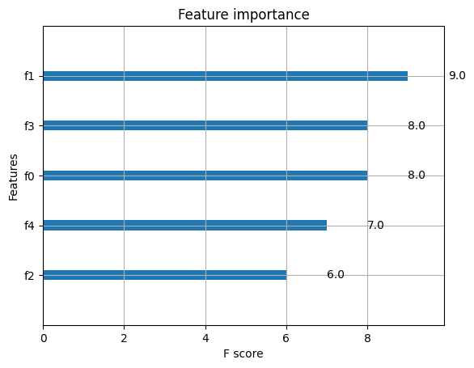

import numpy as np
import xgboost as xgbTraining
DATA AND PARAMETERS
datatrain = np.random.rand(100, 5)
datatest = np.random.rand(20, 5)
labeltrain = np.random.randint(2, size=100)
labeltest = np.random.randint(2, size=20)dtrain = xgb.DMatrix(data=datatrain, label=labeltrain, missing=np.NaN)
dtest = xgb.DMatrix(data=datatest, label=labeltest, missing=np.NaN)params = {
'max_depth': 2,
'eta': 1,
'objective': 'binary:logistic',
'nthread': 4,
'eval_metric': ['auc', 'aucpr']
}
evallist = [
(dtrain, 'train'),
(dtest, 'test')
]
NUM_BOOST_ROUND = 500
EARLY_STOPPING_ROUNDS = 10TRAINING A XGBOOST MODEL
- Validation error needs to decrease at least every
early_stopping_roundsto continue training. - If early stopping occurs, the model will have two additional fields:
bst.best_score,bst.best_iteration. Note thatxgboost.train()will return a model from the last iteration, not the best one. - Note that if you specify more than one evaluation metric the last one in
params['eval_metric']is used for early stopping.
bst = xgb.train(params, dtrain, NUM_BOOST_ROUND, evals=evallist, early_stopping_rounds=EARLY_STOPPING_ROUNDS)[0] train-auc:0.74797 train-aucpr:0.74677 test-auc:0.60417 test-aucpr:0.45374
[1] train-auc:0.83218 train-aucpr:0.84135 test-auc:0.48438 test-aucpr:0.38465
[2] train-auc:0.88312 train-aucpr:0.88933 test-auc:0.43750 test-aucpr:0.34783
[3] train-auc:0.91071 train-aucpr:0.90216 test-auc:0.49479 test-aucpr:0.40930
[4] train-auc:0.93547 train-aucpr:0.94238 test-auc:0.54167 test-aucpr:0.57946
[5] train-auc:0.95394 train-aucpr:0.96630 test-auc:0.50521 test-aucpr:0.55558
[6] train-auc:0.96895 train-aucpr:0.97380 test-auc:0.45312 test-aucpr:0.44828
[7] train-auc:0.96510 train-aucpr:0.96587 test-auc:0.45833 test-aucpr:0.44480
[8] train-auc:0.98052 train-aucpr:0.98376 test-auc:0.48958 test-aucpr:0.46581
[9] train-auc:0.98985 train-aucpr:0.99153 test-auc:0.50000 test-aucpr:0.47493
[10] train-auc:0.99148 train-aucpr:0.99276 test-auc:0.45833 test-aucpr:0.45846
[11] train-auc:0.99148 train-aucpr:0.99214 test-auc:0.47917 test-aucpr:0.48396
[12] train-auc:0.99391 train-aucpr:0.99478 test-auc:0.44792 test-aucpr:0.47871
[13] train-auc:0.99513 train-aucpr:0.99596 test-auc:0.46875 test-aucpr:0.52820bst.best_iteration3bst.best_score0.6095077293305602clf = xgb.XGBClassifier(n_estimators=NUM_BOOST_ROUND, missing=np.NaN, early_stopping_rounds=EARLY_STOPPING_ROUNDS, tree_method='gpu_hist', **params)
clf.fit(datatrain, labeltrain, eval_set=[(datatest, labeltest)])[0] validation_0-auc:0.45455 validation_0-aucpr:0.49829
[1] validation_0-auc:0.53535 validation_0-aucpr:0.52777
[2] validation_0-auc:0.57071 validation_0-aucpr:0.54746
[3] validation_0-auc:0.59091 validation_0-aucpr:0.61996
[4] validation_0-auc:0.57071 validation_0-aucpr:0.54430
[5] validation_0-auc:0.64646 validation_0-aucpr:0.57075
[6] validation_0-auc:0.58586 validation_0-aucpr:0.54497
[7] validation_0-auc:0.55556 validation_0-aucpr:0.53406
[8] validation_0-auc:0.54545 validation_0-aucpr:0.53186
[9] validation_0-auc:0.56566 validation_0-aucpr:0.54329
[10] validation_0-auc:0.54545 validation_0-aucpr:0.53397
[11] validation_0-auc:0.50505 validation_0-aucpr:0.52639
[12] validation_0-auc:0.55556 validation_0-aucpr:0.54172
[13] validation_0-auc:0.52525 validation_0-aucpr:0.52578XGBClassifier(base_score=0.5, booster='gbtree', callbacks=None,
colsample_bylevel=1, colsample_bynode=1, colsample_bytree=1,
early_stopping_rounds=10, enable_categorical=False, eta=1,
eval_metric=['auc', 'aucpr'], feature_types=None, gamma=0,
gpu_id=0, grow_policy='depthwise', importance_type=None,
interaction_constraints='', learning_rate=1, max_bin=256,
max_cat_threshold=64, max_cat_to_onehot=4, max_delta_step=0,
max_depth=2, max_leaves=0, min_child_weight=1, missing=nan,
monotone_constraints='()', n_estimators=500, n_jobs=4, nthread=4,
num_parallel_tree=1, ...)In a Jupyter environment, please rerun this cell to show the HTML representation or trust the notebook. On GitHub, the HTML representation is unable to render, please try loading this page with nbviewer.org.
XGBClassifier(base_score=0.5, booster='gbtree', callbacks=None,
colsample_bylevel=1, colsample_bynode=1, colsample_bytree=1,
early_stopping_rounds=10, enable_categorical=False, eta=1,
eval_metric=['auc', 'aucpr'], feature_types=None, gamma=0,
gpu_id=0, grow_policy='depthwise', importance_type=None,
interaction_constraints='', learning_rate=1, max_bin=256,
max_cat_threshold=64, max_cat_to_onehot=4, max_delta_step=0,
max_depth=2, max_leaves=0, min_child_weight=1, missing=nan,
monotone_constraints='()', n_estimators=500, n_jobs=4, nthread=4,
num_parallel_tree=1, ...)clf.best_iteration3clf.best_score0.6199609259353032bst = clf.get_booster()SAVING A XGBOOST MODEL
bst.save_model('0001.json')DUMPING A XGBOOST MODEL
bst.dump_model('dump.raw.txt')LOADING A XGBOOST MODEL
bst = xgb.Booster({'nthread': 4})
bst.load_model('0001.json')PREDICTIONS WITH XGBOOST
- When
pred_leaf=True, the output will be a matrix of(nsample, ntrees)with each record indicating the predicted leaf index of each sample in each tree. Note that the leaf index of a tree is unique per tree, so you may find leaf 1 in both tree 1 and tree 0.
data = np.random.rand(50, 5)
dnew = xgb.DMatrix(data)ypred = bst.predict(dnew, iteration_range=(0, bst.best_iteration + 1), pred_leaf=True)ypredarray([[5., 4., 4., 4., 5.],
[4., 4., 3., 3., 5.],
[4., 3., 3., 4., 3.],
[4., 4., 5., 5., 5.],
[4., 5., 3., 4., 6.],
[5., 5., 5., 5., 6.],
[4., 6., 5., 5., 6.],
[4., 4., 5., 5., 5.],
[4., 4., 5., 4., 5.],
[4., 6., 3., 4., 6.],
[5., 5., 4., 3., 5.],
[4., 4., 3., 4., 4.],
[5., 4., 5., 5., 4.],
[5., 5., 3., 4., 6.],
[4., 4., 3., 4., 5.],
[4., 4., 3., 4., 5.],
[5., 4., 3., 3., 5.],
[3., 4., 3., 4., 5.],
[4., 4., 5., 4., 4.],
[3., 4., 3., 4., 5.],
[4., 4., 3., 4., 5.],
[5., 4., 4., 3., 5.],
[5., 4., 4., 3., 5.],
[4., 4., 5., 5., 4.],
[4., 4., 3., 4., 4.],
[4., 4., 3., 4., 5.],
[4., 4., 3., 4., 4.],
[5., 4., 3., 3., 4.],
[6., 4., 5., 6., 5.],
[5., 5., 3., 3., 6.],
[4., 4., 5., 6., 5.],
[5., 5., 6., 4., 5.],
[3., 4., 3., 4., 5.],
[4., 4., 3., 3., 4.],
[3., 4., 3., 3., 5.],
[4., 4., 3., 4., 5.],
[4., 3., 3., 4., 3.],
[3., 5., 5., 5., 6.],
[6., 4., 3., 4., 5.],
[3., 4., 3., 4., 4.],
[5., 6., 4., 4., 6.],
[4., 4., 3., 3., 5.],
[4., 3., 3., 4., 3.],
[3., 4., 3., 4., 4.],
[4., 4., 3., 4., 5.],
[6., 4., 3., 3., 4.],
[5., 5., 3., 4., 6.],
[5., 4., 3., 4., 5.],
[6., 4., 3., 4., 4.],
[5., 4., 3., 4., 5.]], dtype=float32)PLOTTING FEATURE IMPORTANCE
xgb.plot_importance(bst)<AxesSubplot: title={'center': 'Feature importance'}, xlabel='F score', ylabel='Features'>
CROSS-VALIDATION AND OOT
datatrain = np.random.rand(1000, 10)
dataoot = np.random.rand(200, 10)
labeltrain = np.random.randint(2, size=1000)
labeloot = np.random.randint(2, size=200)dtrain = xgb.DMatrix(data=datatrain, label=labeltrain, missing=np.NaN)
doot = xgb.DMatrix(data=dataoot, label=labeloot, missing=np.NaN)params = {
'max_depth': 2,
'eta': 1,
'objective': 'binary:logistic',
'nthread': 4
}
NUM_BOOST_ROUND = 500res = xgb.cv(
params,
dtrain,
NUM_BOOST_ROUND,
nfold=5,
metrics=['auc', 'aucpr'],
seed=222437,
callbacks=[
xgb.callback.EvaluationMonitor(show_stdv=True),
xgb.callback.EarlyStopping(5)
]
)[0] train-auc:0.59549+0.00922 train-aucpr:0.57392+0.01259 test-auc:0.52287+0.02150 test-aucpr:0.50727+0.02902
[1] train-auc:0.63518+0.00447 train-aucpr:0.62814+0.01119 test-auc:0.51993+0.03365 test-aucpr:0.51834+0.03660
[2] train-auc:0.66577+0.00819 train-aucpr:0.66550+0.01507 test-auc:0.52432+0.05734 test-aucpr:0.52393+0.05583
[3] train-auc:0.68884+0.00628 train-aucpr:0.68979+0.01353 test-auc:0.50710+0.04698 test-aucpr:0.51821+0.05694
[4] train-auc:0.70636+0.00628 train-aucpr:0.71032+0.01677 test-auc:0.52474+0.05147 test-aucpr:0.52882+0.05464
[5] train-auc:0.72509+0.00872 train-aucpr:0.72626+0.01974 test-auc:0.53069+0.04841 test-aucpr:0.52900+0.05927
[6] train-auc:0.73596+0.00990 train-aucpr:0.73683+0.01964 test-auc:0.53218+0.05628 test-aucpr:0.52866+0.05862
[7] train-auc:0.74893+0.00854 train-aucpr:0.74920+0.01585 test-auc:0.52048+0.05589 test-aucpr:0.52509+0.06143
[8] train-auc:0.75881+0.01027 train-aucpr:0.76137+0.01610 test-auc:0.51687+0.05365 test-aucpr:0.52185+0.05941
[9] train-auc:0.76834+0.01239 train-aucpr:0.77129+0.01485 test-auc:0.50854+0.05521 test-aucpr:0.51501+0.05730
[10] train-auc:0.77915+0.01244 train-aucpr:0.78429+0.01781 test-auc:0.50072+0.05120 test-aucpr:0.51374+0.05883res| train-auc-mean | train-auc-std | train-aucpr-mean | train-aucpr-std | test-auc-mean | test-auc-std | test-aucpr-mean | test-aucpr-std | |
|---|---|---|---|---|---|---|---|---|
| 0 | 0.595486 | 0.009224 | 0.573920 | 0.012595 | 0.522872 | 0.021503 | 0.507275 | 0.029020 |
| 1 | 0.635180 | 0.004473 | 0.628143 | 0.011190 | 0.519934 | 0.033654 | 0.518338 | 0.036600 |
| 2 | 0.665770 | 0.008189 | 0.665498 | 0.015071 | 0.524315 | 0.057342 | 0.523929 | 0.055829 |
| 3 | 0.688839 | 0.006285 | 0.689788 | 0.013531 | 0.507102 | 0.046984 | 0.518215 | 0.056935 |
| 4 | 0.706364 | 0.006279 | 0.710319 | 0.016768 | 0.524735 | 0.051473 | 0.528818 | 0.054635 |
| 5 | 0.725086 | 0.008716 | 0.726262 | 0.019743 | 0.530691 | 0.048409 | 0.528997 | 0.059272 |
USING DATA ITERATOR WITH QUANTILE DMATRIX
- Passing batches of data into
xgboost.DeviceQuantileDMatrixand use thisDeviceQuantileDMatrixfor training. The feature is used primarily designed to reduce the required GPU memory for training on distributed environment.
import cupyCOLS = 64
ROWS_PER_BATCH = 1000
BATCHES = 32
NUM_BOOST_ROUND = 500class IterForDMatrixDemo(xgb.core.DataIter):
'''A data iterator for XGBoost DMatrix.
`reset` and `next` are required for any data iterator, other functions here
are utilites for demonstration's purpose.
'''
def __init__(self):
'''Generate some random data for demostration.
Actual data can be anything that is currently supported by XGBoost.
'''
self.rows = ROWS_PER_BATCH
self.cols = COLS
rng = cupy.random.RandomState(1994)
self._data = [rng.randn(self.rows, self.cols)] * BATCHES
self._labels = [rng.randn(self.rows)] * BATCHES
self._weights = [rng.uniform(size=self.rows)] * BATCHES
self.it = 0
super().__init__()
def reset(self):
'''Reset the iterator'''
self.it = 0
def next(self, input_data):
'''Yield next batch of data.'''
if self.it == len(self._data):
# Return 0 when there's no more batch.
return 0
input_data(data=self.data(), label=self.labels(),
weight=self.weights())
self.it += 1
return 1it = IterForDMatrixDemo()
m_with_it = xgb.DeviceQuantileDMatrix(it)reg_with_it = xgb.train(
param={
'tree_method': 'gpu_hist'
},
m_with_it,
num_boost_round=NUM_BOOST_ROUND
)predict_with_it = reg_with_it.predict(m_with_it)